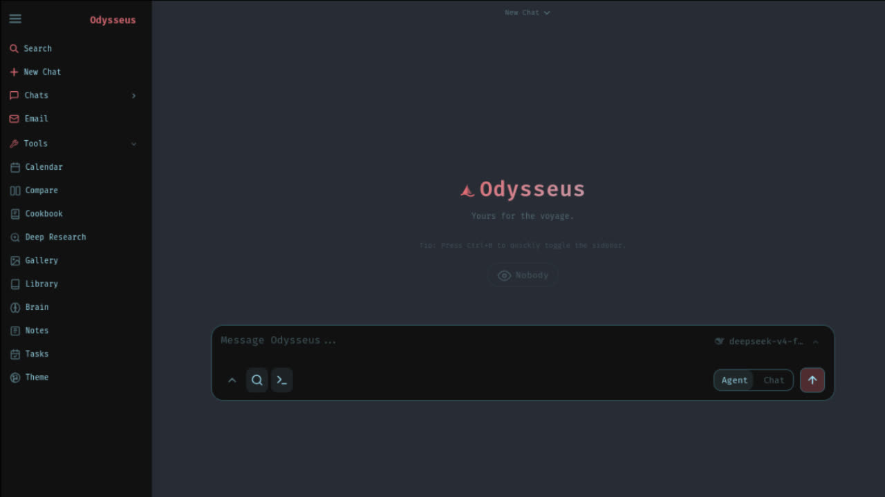
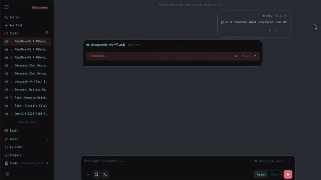
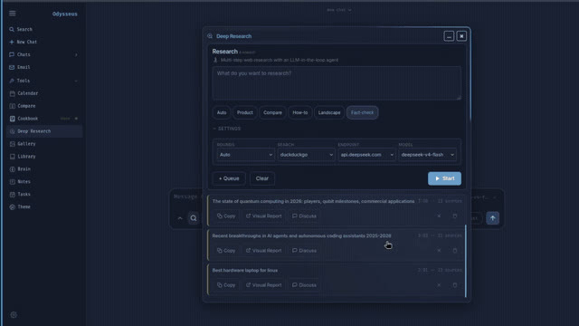
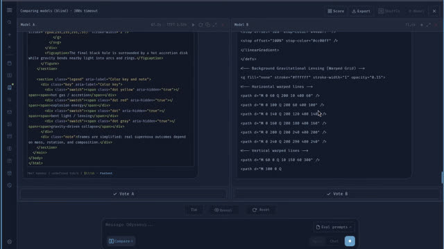

ChatGPT나 Claude를 쓰다 보면 어느 순간 이런 생각이 든다. “좋은데, 이 모든 작업실이 내 컴퓨터 안에 있으면 안 되나?” Odysseus는 그 질문에 꽤 직접적으로 답합니다.

Q. 한 문장으로 말하면, Odysseus는 뭔가요?
A. 내 컴퓨터에 올리는 AI 작업실입니다.
조금 더 풀면, ChatGPT와 Claude에서 익숙한 UI 경험을 셀프호스팅으로 가져오려는 프로젝트예요. 채팅만 있는 게 아니라, 에이전트, 문서 편집기, 딥 리서치, 모델 비교, 이메일, 캘린더, 노트, 태스크까지 한 화면 안에 묶으려는 쪽에 가깝습니다.
중요한 단어는 “local-first”입니다. 모델도 내 하드웨어에서 돌릴 수 있고, 데이터도 내 쪽에 둘 수 있고, 필요하면 API 모델도 붙일 수 있습니다. 완전히 로컬만 고집하는 순혈주의라기보다는, 내가 통제하는 작업실을 만들고 거기에 로컬 모델과 외부 API를 같이 꽂는 방식에 가깝습니다.
README의 톤도 재미있습니다. 스스로 완성된 엔터프라이즈 제품처럼 말하지 않아요. “더 엉성하고 더 재미있는” 쪽에 가깝다고 스스로 말합니다. 그래서 첫인상은 멋진 SaaS 클론보다, 혼자 쓰려고 진심으로 만든 작업실을 오픈소스로 열어둔 느낌이 강합니다.
Q. 채팅 앱이 아니라 작업실이라고 부르는 이유가 있나요?
A. 채팅창 하나로 끝내지 않기 때문입니다.
채팅은 기본입니다. vLLM, llama.cpp, Ollama, OpenRouter, OpenAI 같은 백엔드를 붙일 수 있게 되어 있습니다. 그런데 Odysseus가 흥미로운 지점은 채팅 옆에 다른 방들을 계속 붙인다는 데 있습니다.
에이전트는 도구를 받아서 파일, 웹, 셸, MCP, 스킬, 메모리를 써가며 일을 처리합니다. Cookbook은 하드웨어를 스캔해서 어떤 모델이 맞을지 추천하고, 다운로드와 서빙까지 이어주려 합니다. Deep Research는 여러 단계를 돌면서 자료를 모으고 읽고 종합해 시각적인 리포트를 만듭니다. Compare는 모델을 나란히 놓고 블라인드 테스트처럼 비교하는 도구입니다.

이건 단순한 “로컬 LLM 채팅 UI”와는 결이 조금 다릅니다. 채팅은 입구고, 목표는 반복 업무를 담는 개인용 운영체제에 가깝습니다. 이 방향은 OpenClaw가 더 작고 빨라졌다는 글에서 봤던 흐름과도 닮아 있습니다. AI 도구들이 점점 “모델을 부르는 창”에서 “작업을 관리하는 환경”으로 이동하고 있는 거죠.
Q. 가장 Odysseus다운 기능을 하나만 고르면요?
A. Cookbook이요.
요즘 로컬 모델을 돌리려면 사용자가 알아야 할 게 너무 많습니다. VRAM이 얼마나 필요한지, GGUF를 받을지 FP8을 받을지, vLLM을 쓸지 llama.cpp를 쓸지, Apple Silicon에서는 뭘 포기해야 하는지. 이걸 매번 사람이 계산하게 두면 로컬 AI는 계속 취미 생활로 남습니다.
Odysseus의 Cookbook은 이 부분을 제품 기능으로 끌어옵니다. 하드웨어를 보고, 모델을 추천하고, fit scoring을 하고, 다운로드와 서빙까지 연결하려는 구조입니다. README 기준으로는 llmfit을 바탕으로 VRAM-aware 추천을 한다고 되어 있습니다.
저는 이 선택이 꽤 중요하다고 봅니다. 로컬 AI의 병목은 “모델이 없어서”가 아니라 내 컴퓨터에서 무엇이 실제로 돌아가는지 모르겠는 문제거든요. Cookbook이 잘 작동하면 사용자는 모델 카드와 벤치마크 표 사이에서 헤매지 않고, “지금 이 기계에서 쓸 수 있는 선택지”를 바로 볼 수 있습니다.
Q. Deep Research와 Compare는 왜 들어갔을까요?
A. 모델을 쓰는 사람에게 필요한 건 답 하나가 아니라 판단 근거이기 때문입니다.
Deep Research는 자료를 찾아 읽고 종합하는 기능입니다. 단순 검색 요약이 아니라 여러 단계의 작업을 거쳐 리포트로 만드는 쪽을 겨냥합니다. Compare는 여러 모델의 답을 나란히 놓고, 가능하면 블라인드로 비교하게 해줍니다.

이 둘은 사실 같은 질문을 공유합니다.
“AI가 대답했다. 그래서 그 답을 믿어도 되나?”
Deep Research는 답의 배경을 넓혀주고, Compare는 답의 상대적인 품질을 보게 해줍니다. 한 모델이 그럴듯하게 말하는 순간을 넘어, 여러 모델과 여러 자료 사이에서 판단하게 만드는 장치입니다.

Q. 문서, 이메일, 캘린더까지 넣는 건 너무 욕심 아닌가요?
A. 맞아요. 그런데 그 욕심이 이 프로젝트의 성격입니다.
Odysseus에는 Documents, Memory, Skills, Email, Notes & Tasks, Calendar가 들어갑니다. 문서 편집기는 마크다운, HTML, CSV, 문법 강조, AI 편집과 제안을 다룹니다. 메모리와 스킬은 ChromaDB와 fastembed 기반 검색을 붙여, 에이전트가 시간이 지날수록 사용자와 일을 더 잘 이해하게 만드는 방향입니다.
이메일은 IMAP/SMTP를 기반으로 긴급도 알림, 자동 태그, 요약, 답장 초안, 스팸 처리까지 건드립니다. 캘린더는 CalDAV 동기화를 염두에 둡니다. 노트와 태스크에는 리마인더와 예약 작업이 붙습니다.
이쯤 되면 “AI 채팅앱”이라는 말이 안 맞습니다. 오히려 개인용 그룹웨어에 AI를 넣는 시도에 가깝습니다. 물론 이 방향은 위험합니다. 기능이 많아질수록 설치, 권한, 보안, 모바일 UI, 장애 상태 처리가 다 어려워집니다.
그런데 README와 로드맵을 보면, 프로젝트도 그걸 모르는 척하지 않습니다. 로드맵의 첫 번째 고우선순위가 버그 잡기와 신선한 Docker 설치 테스트입니다. 통합 기능이 실제로 잘 도는지 감사해야 한다고도 적혀 있습니다. “이미 다 됐다”가 아니라, 혼자 쓰던 강력한 도구를 다른 컴퓨터에서도 살아남게 만드는 단계에 있는 셈입니다.
Q. 설치는 쉬운 편인가요?
A. Docker가 가장 단순하고, Mac은 네이티브 실행을 권합니다.
README 기준 추천 경로는 Docker입니다. 저장소를 클론하고 .env.example을 복사한 뒤 docker compose up -d --build로 올립니다. 기본 포트는 7000입니다.
macOS, 특히 Apple Silicon에서는 이야기가 조금 달라집니다. Docker on macOS는 Metal GPU를 쓸 수 없기 때문에, GPU 가속 Cookbook을 원하면 네이티브 실행을 권합니다. 이때는 ./start-macos.sh를 쓰고, 기본 실행 주소는 http://127.0.0.1:7860입니다. AirPlay가 7000번 포트를 잡는 일이 있어서 7860을 쓴다는 설명도 붙어 있습니다.
Windows도 네이티브 런처가 있습니다. 다만 full Cookbook의 백그라운드 모델 다운로드나 에이전트 셸 도구를 온전히 쓰려면 Git for Windows가 필요하고, vLLM/SGLang 같은 GPU 서빙은 Linux나 WSL2 쪽이 현실적입니다. Windows에서 간단히 로컬 모델을 붙이는 경로로는 Ollama가 언급됩니다.
여기서 핵심은 “설치 명령 한 줄”보다 운영 감각입니다. Odysseus는 파일 업로드, 셸, 모델 다운로드, 웹 리서치, 이메일, 캘린더, API 토큰을 다루는 도구입니다. README의 보안 노트가 꽤 긴 이유가 있습니다.
Q. 보안 쪽에서는 무엇을 조심해야 하나요?
A. 이건 귀여운 채팅 UI가 아니라 관리자 콘솔에 가깝다고 봐야 합니다.
Odysseus는 강한 도구를 품습니다. 셸 접근, 파일 읽기와 쓰기, API 토큰, 이메일, 캘린더, 웹훅, 모델 서버 관리까지 들어갈 수 있습니다. 그래서 네트워크에 노출할 때는 AUTH_ENABLED=true를 유지하고, HTTPS 없이 공개 인터넷에 직접 열지 말라는 주의가 붙어 있습니다.
처음 실행 뒤에는 data/auth.json을 확인해 관리자 계정과 가입 정책을 점검해야 합니다. .env, data/, 로그, 데이터베이스, 업로드 파일, 백업을 Git에 넣지 말라는 경고도 당연하지만 중요합니다.
여기서 저는 Odysseus의 솔직함이 마음에 듭니다. “프라이버시 우선”이라고 말하면서 보안 위험을 작게 보이게 만들지 않습니다. 셀프호스팅의 장점은 통제권이지만, 통제권은 곧 운영 책임이기도 합니다.
Q. 지금 당장 누구에게 맞을까요?
A. 로컬 AI를 “제품”보다 “작업실”로 쓰고 싶은 사람에게 맞습니다.
그냥 예쁜 채팅 UI만 필요하면 선택지는 많습니다. Docker로 올리고, API 키 붙이고, 채팅하면 끝나는 도구도 많습니다. Odysseus는 그보다 욕심이 큽니다. 로컬 모델을 고르고, 에이전트에게 도구를 주고, 문서를 쓰고, 리서치를 돌리고, 이메일과 캘린더까지 한 작업실에 넣으려 합니다.
그래서 추천 대상도 선명합니다.
- 로컬 LLM과 API 모델을 함께 쓰고 싶은 사람
- 모델 추천과 서빙까지 한 화면에서 다루고 싶은 사람
- 에이전트가 파일, 웹, 셸, 메모리를 써가며 일하게 만들고 싶은 사람
- 셀프호스팅의 번거로움을 감수할 만큼 데이터 통제권을 중요하게 보는 사람
- 약간의 거친 UI와 버그를 오픈소스 프로젝트의 현재 상태로 받아들일 수 있는 사람
반대로, 안정적인 팀용 SaaS를 기대하면 아직 이릅니다. 로드맵도 CSS 정리, 설치 테스트, 통합 감사, 접근성, 빈 상태와 에러 메시지, 백업/복구 가이드 같은 아주 현실적인 숙제를 적고 있습니다. 좋은 신호입니다. 진짜 쓰는 사람만 이런 문제를 적습니다.
Q. 마지막으로, Odysseus가 던지는 질문은 뭔가요?
A. AI 작업실의 소유권을 어디에 둘 것인가입니다.
요즘 AI 제품은 점점 좋아집니다. 동시에 점점 더 많은 생활과 업무의 표면을 가져갑니다. 채팅, 문서, 이메일, 캘린더, 메모리, 파일, 검색, 자동화. 편리하지만, 그 모든 것이 남의 서버 위에 있을 때 마음 한쪽이 찜찜해지는 순간이 있습니다.
Odysseus는 그 찜찜함에 대한 DIY식 답입니다. 완성품이라기보다 항해 중인 배에 가깝습니다. 삐걱거릴 수 있고, 손봐야 할 구석도 많습니다. 하지만 방향은 선명합니다.
AI를 쓰는 창을 빌리는 대신, 내 작업실 안에 AI를 들여놓는 것.
그게 이 프로젝트가 재미있는 이유입니다. 그리고 아마 앞으로 로컬 AI 도구들이 계속 물고 늘어질 질문이기도 합니다.
출처와 이미지: 이 글은 Odysseus GitHub 저장소의 README, ROADMAP, docs 이미지를 바탕으로 작성했습니다. Odysseus 저장소와 문서 이미지는 MIT 라이선스입니다. PewDiePie 사진은 Wikimedia Commons의 Pewdiepie head shot.jpg를 사용했으며, 원 저작자는 Cold Ones Clips, 라이선스는 CC BY 3.0입니다.
{kind=link}